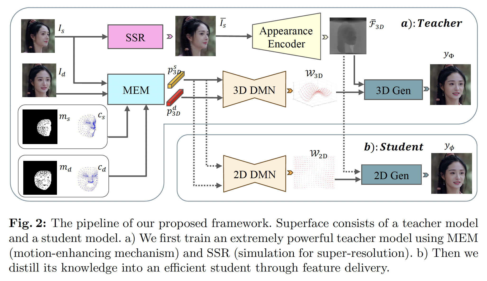

Talking face generation technology creates talking videos from arbitrary appearance and motion signal, with the "arbitrary" offering ease of use but also introducing challenges in practical applications. Existing methods work well with standard inputs but suffer serious performance degradation with intricate real-world ones. Moreover, efficiency is also an important concern in deployment. To comprehensively address these issues, we introduce SuperFace, a teacher-student framework that balances quality, robustness, cost and editability. We first propose a simple but effective teacher model capable of handling inputs of varying qualities to generate high-quality results. Building on this, we devise an efficient distillation strategy to acquire an identity-specific student model that maintains quality with significantly reduced computational load. Our experiments validate that SuperFace offers a more comprehensive solution than existing methods for the four mentioned objectives, especially in reducing FLOPs by 99% with the student model. SuperFace can be driven by both video and audio and allows for localized facial attributes editing.
The overall framework of SuperFace is demonstrated as follows:
